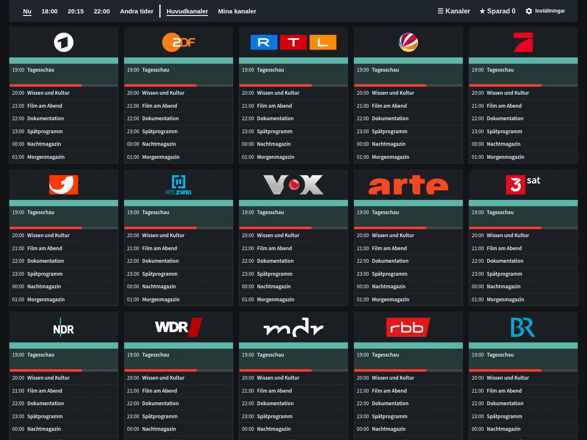
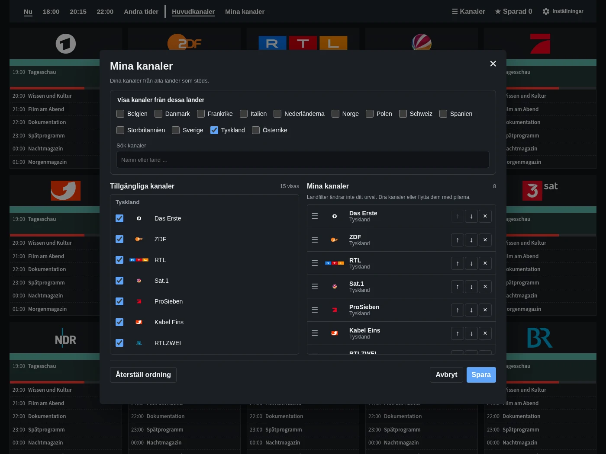
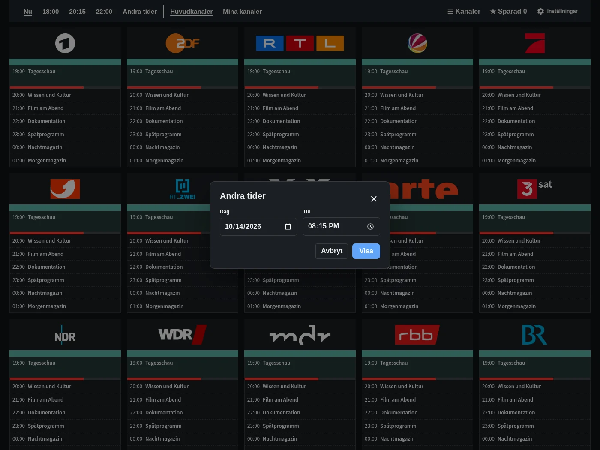
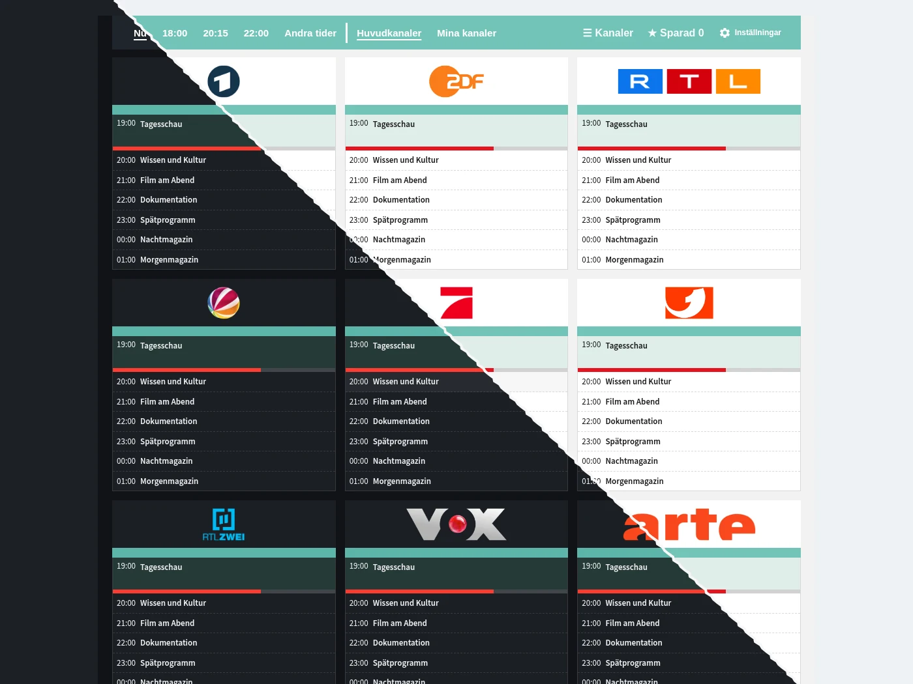

Programöversikt
Kanaler, tider och program på ett ställe. Gå direkt till nu, 18:00, 20:15 eller 22:00.
Se programöversikten, personliga kanallistor, tidsval och det valfria dashboardkortet.

Kanaler, tider och program på ett ställe. Gå direkt till nu, 18:00, 20:15 eller 22:00.

Välj favoriter från de tillgängliga länderna och ordna dem som du vill.

Välj ett annat datum och en tid utan att lämna guiden.

Lägg till TV Guide i din dashboard. Hela guiden finns också i sidopanelen.
Exempelprogram. Programtitlar visas på originalspråket.
Gratis och direkt i Home Assistant.
Öppna i HACS